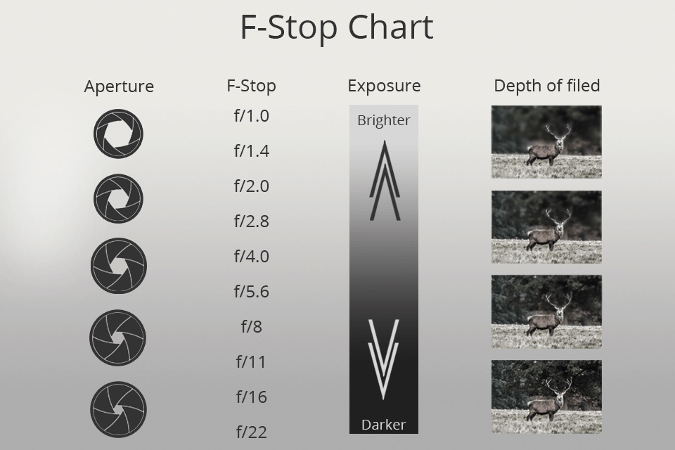

Welcome to my offical site dedicated to my Photography and my Experinces
Photography Experiences
Here is an overview of the start to my photography journey. My passion grew over the years and turned into much more than a hobby.
My love for cameras started back in middle school circa 2012. I always had a strong appreciation for the arts, as for the majority of my life I wanted to be a professional painter or drawer. Upon reflection of my skill set I realized that I could do so much more with various different mediums. Once entering high school my passions quickly transformed from hand crafted artistry to a love for the digital arts. Walking into the darkroom for the first time only further sulitified that this was a huge passion of mine that I've been searching for.
I bought my first black and white camera freshman year and it was called a "Minolta X-700". I then learned the In's and Out's of how to use things like aperature, f-stops, exposure, depth of field, and more.

I spent hours in the darkroom and with my camera learning the basics and honing my skills to a point of comfortable understanding. As the next four years progressed I graduated from film to digital cameras. Digital cameras were a completely different area of expertise to master. Many people, myself included, believe that digital cameras are simple and easy to master but there is so much more than just clicking an automatic button. They are mush more user friendly, but to truly master a digital camera means being able to get away from the automatic settings and to understand the manual settings.
About my Camera

This was the first camera purchased by myself so I could learn the most up to date features in the digital DSLR camera world. This was the latest model at the time and it came with the most up to date features.
- Canon rebel t5 DSLR features: